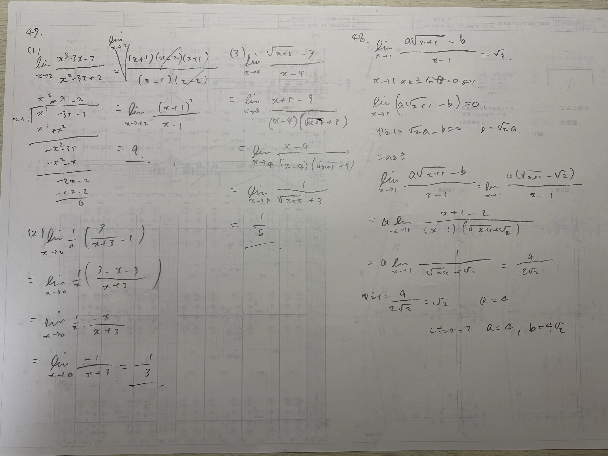

数学III。極限。 新しい学習記録方式のテスト。
3 pages

数学III。極限。 新しい学習記録方式のテスト。
数学I・A・II・B・III・Cをテーマ別に探す
記事はまだありません。
記事はまだありません。
記事はまだありません。
記事はまだありません。
数学IIIはほぼ未修、数学II・Bも久しぶりの学習です。
高校数学をひとつずつ学び直し、難関大受験数学にも挑戦しながら、
いつかその先の大学数学に触れられるところまで進みたいと思っています。
sakurak02が数学を学び直す過程を、ChatGPTとの対話とともに記録しています。
正解だけでなく、迷ったこと、考え直したこと、理解がつながった瞬間も残していきます。
最初に取り組んだ問題でのつまずきをもとに、ChatGPTのオリジナル問題で復習するスタイルです。